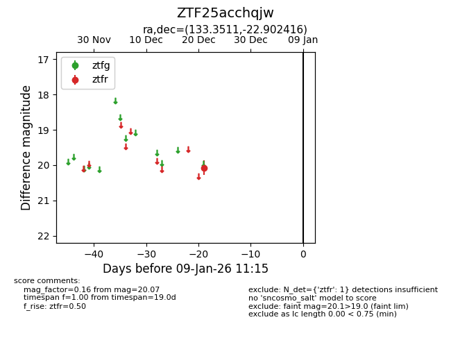
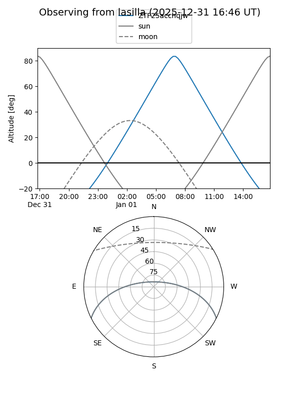
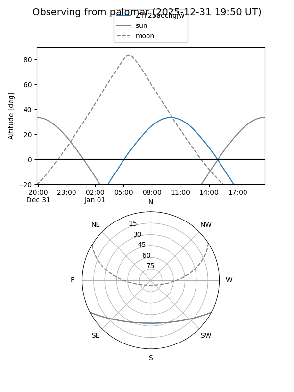

ZTF25acchqjw
Target ZTF25acchqjw at 2025-12-31 17:00
Aliases and brokers:
FINK:
Lasair:
ALeRCE:
alt names
ZTF25acchqjw (ztf,fink_ztf)
Coordinates:
equatorial (ra, dec) = 133.3511,-22.90242
equatorial (HMS+DMS) = 08:53:24.27,-22:54:08.70
galactic (l, b) = (248.1096,+13.80039)
Flags:
Photometry:
last ztfr=20.07
1 ztfr detections
Lightcurve

Visibility


Additional plots